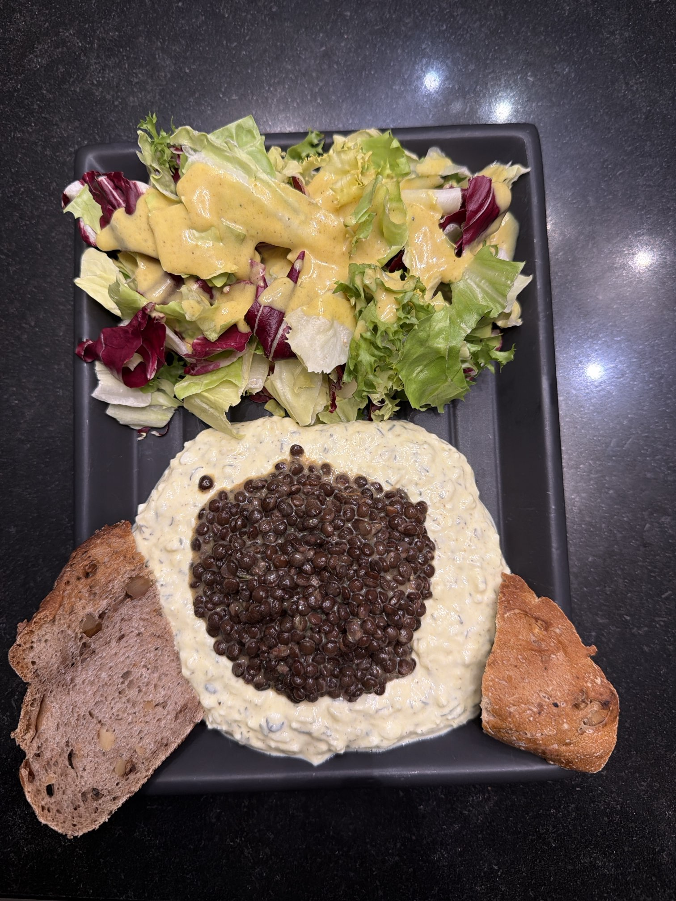

Kalt oder lauwarm · mit Blattsalat und Nussbrot

Zutaten
Zubereitung
Zwiebel mildern
Zwiebelwürfel 5 Minuten in kaltem Wasser ziehen lassen, abgiessen und trockentupfen.
Dressing anrühren
Zitronensaft, Senf, 1 EL Olivenöl, Salz und Pfeffer verrühren.
Linsensalat
Linsen, Zwiebeln und die Hälfte der Kräuter mit dem Dressing mischen. Mindestens 15 Minuten ziehen lassen.
Creme
Ricotta und Hüttenkäse glatt rühren. Mit Zitronenabrieb, Salz, Pfeffer, dem restlichen Öl und einem Teil des Schnittlauchs abschmecken.
Anrichten
Creme auf die Teller streichen, Linsensalat daraufgeben und mit Schnittlauch und Pfeffer bestreuen.
Servieren
Dazu passen Blattsalat mit Senf-Dressing und Nussbrot.
Warme Variante: Linsen vor dem Anrichten kurz in der Pfanne mit dem Dressing erwärmen, nur lauwarm, damit sie nicht zerfallen. Die Creme bleibt kalt.